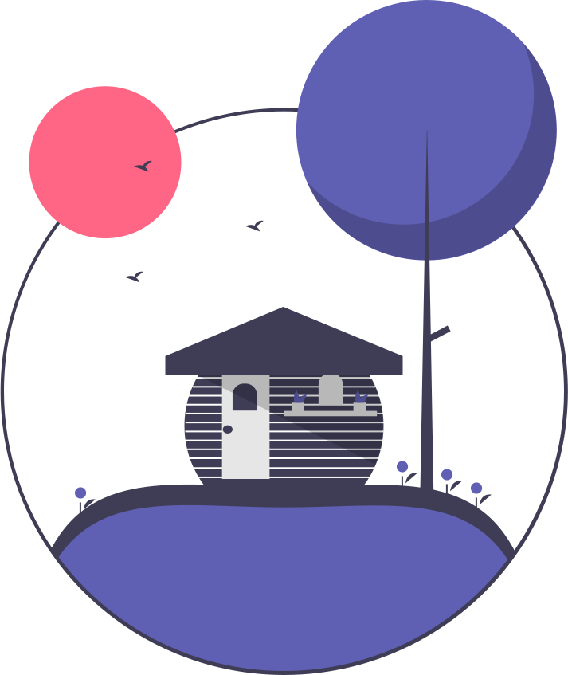

Qual é o nome do famoso templo dourado em Quioto?
Em qual estação do ano as cerejeiras florescem em Quioto?
Quais desses eventos são festivais tradicionais de Quioto?

Quando Quioto foi fundada como capital imperial do Japão?
Se você fosse a um festival noturno em Quioto, que horas começaria?
Qual cor mais representa o outono em Quioto, quando as folhas mudam de cor?
Quantos templos e santuários existem em Quioto?
Em uma escala de 1 a 10, o quanto você gostaria de visitar Quioto?
Em que data o Templo Kiyomizu-dera foi registrado como Patrimônio Mundial da UNESCO?
Carregue uma imagem do seu lugar favorito de Quioto ou de um ponto turístico que você gostaria de visitar.
Escreva um comentário!
Dê uma nota apartir de sua experiência sobre este quizz.